Tutorial 3: Visualization and Metadata Integration
Beatriz M. Meriño
2026-09-19
Source:vignettes/tutorial-3-cactus-phylogeny-visualization.Rmd
tutorial-3-cactus-phylogeny-visualization.RmdAbstract
This tutorial covers the last stage of the core workflow: integration of species metadata, figures of the phylogenetic products, and summaries of conservation status. It uses the supermatrix, maximum-likelihood tree, bootstrap support values and chronogram produced in Tutorial 1 and Tutorial 2.
Module 11 reconciles the species in the supermatrix with the accepted checklist of Cactaceae and retrieves species-level assessments from the IUCN Red List. The result is one table that records, for each species, its taxonomic status, molecular sampling, placement in the tree, distribution and conservation category.
Module 12 produces seventeen figures in five groups: coverage of the molecular dataset, structure of the supermatrix, the tree and the chronogram, the species accounting across pipeline stages, and summaries of IUCN categories, endemism, threats and habitats.
Complete Pipeline Execution Workflow
Setup: Creating a Clean Workspace
Install the required packages before running this module. IUCN
queries use the rredlist package.
To install the required dependencies:
required_pkgs <- c("dplyr", "tidyr", "stringr", "readr", "ggplot2", "forcats", "purrr", "scales", "rredlist")
new_pkgs <- required_pkgs[!(required_pkgs %in% installed.packages()[,"Package"])]
if(length(new_pkgs)) install.packages(new_pkgs)IUCN Red List API token. The IUCN queries require a
personal API token. Run rredlist::rl_use_iucn() to open the
registration page, store the token in .Renviron (opened
with usethis::edit_r_environ()) as
IUCN_REDLIST_KEY="your_api_key", and restart R.
Data Setup & Pre-processing
To run the module as a script, copy the executable script to the tutorial directory:
tutorial_dir <- path.expand("~/Desktop/PhyloCactus_Tutorial")
setwd(tutorial_dir)
# Copy the entire tutorial script for easy execution
file.copy(
system.file("scripts", "tutorial-3-cactus-phylogeny-visualization.R", package = "PhyloCactus"),
file.path(tutorial_dir, "tutorial-3-cactus-phylogeny-visualization.R")
)Module 11: Taxonomic Reconciliation and IUCN Metadata Enrichment
This module requires the outputs of Tutorial 2: Phylogenetic Inference and Divergence Time Estimation.
Species Registry
The species registry links each accepted species to its molecular sampling, its placement in the tree and its IUCN assessment. With these data, threatened species without sequence data can be listed, and the molecular sampling of threatened and non-threatened species can be compared. The registry can also serve as input for phylogeny-based conservation metrics such as EDGE scores (Isaac et al. 2007), which are not computed in this tutorial.
Names are reconciled against the Cactaceae checklist of
Caryophyllales.org (Korotkova et al. 2021; export of 1 July
2026), which lists 1,965 accepted species. With 38 outgroup species from
Anacampserotaceae, Portulacaceae and Talinaceae, the registry contains
2,003 species. The supermatrix includes 1,060 of them (1,022 ingroup, 38
outgroup). The maximum-likelihood tree and the chronogram have 1,024
tips (986 ingroup, 38 outgroup), because RAxML-NG removed
36 ingroup species whose sequences were identical to those of another
species. The other 943 accepted species have no sequence data, and 134
of them are listed as threatened (CR, EN or VU) by the IUCN Red
List.
Load the libraries and the outputs of the previous modules:
# ============================================================
# LIBRARIES
# ============================================================
library(PhyloCactus)
library(dplyr)
library(tidyr)
library(stringr)
library(readr)
library(ggplot2)
library(forcats)
library(purrr)
library(scales)
dir.create("9_Visualization/figures", showWarnings = FALSE, recursive = TRUE)
dir.create("9_Visualization/tables", showWarnings = FALSE, recursive = TRUE)
# ============================================================
# INPUT FILES (Referenced from tutorial root paths)
# ============================================================
species_file <- "6_Concatenated/final_tables/TABLE_final_species_alignment_summary.csv"
output_file <- "9_Visualization/tables/TABLE_species_all_data.csv"
prioritization_file <- "9_Visualization/tables/TABLE_conservation_prioritization_gaps.csv"
marker_stats_file <- "6_Concatenated/final_tables/TABLE_marker_statistics.csv"
marker_ranges_file <- "6_Concatenated/final_tables/TABLE_marker_ranges.tsv"
# Canonical inputs that do not change across runs
accepted_list_file <- system.file("extdata", "CactaceaeFullList_2026_07_01_Beatriz_Merino.xlsx", package = "PhyloCactus")
constraints_csv_path <- system.file("extdata", "cactus_constraints.csv", package = "PhyloCactus")
# Tree outputs from Modules 9 and 10
supp_tree_file <- if (file.exists("7_Phylogenetics/cactus_support.raxml.support")) {
"7_Phylogenetics/cactus_support.raxml.support"
} else {
"7_Phylogenetics/cactus.raxml.bestTree"
}
dated_tree_file <- "8_Dating/BestTree_treePL.tree"
chrono_file <- "8_Dating/dated_summary_hpd.tree"
# ============================================================
# LOAD SPECIES TABLE & ACCEPTED CHECKLIST (Korotkova et al. 2021)
# ============================================================
message("Reading species genetics table from supermatrix outputs...")
species_summary <- read_csv(species_file, show_col_types = FALSE) %>%
mutate(species_clean = str_replace_all(species, "_", " "))
message("Reading accepted checklist (Korotkova et al. 2021, Caryophyllales.org)...")
if (grepl("\\.xlsx?$", accepted_list_file, ignore.case = TRUE)) {
sheets <- readxl::excel_sheets(accepted_list_file)
checklist_sheets <- sheets[!grepl("^facts", sheets, ignore.case = TRUE)]
list_df <- lapply(checklist_sheets, function(sh) {
df <- readxl::read_excel(accepted_list_file, sheet = sh)
df$family_sheet <- sh
df
})
accepted_list <- dplyr::bind_rows(list_df)
} else {
accepted_list <- read.csv(accepted_list_file, stringsAsFactors = FALSE)
if (!"family_sheet" %in% names(accepted_list)) accepted_list$family_sheet <- "Cactaceae"
}
# Normalize names to the format of the alignment keys
normalize_species <- function(x) {
x |>
stringr::str_replace_all("\u00d7", "") |>
stringr::str_replace_all("\\bx[[:space:]]+", "") |>
stringr::str_trim() |>
stringr::str_replace_all("[ -]+", "_")
}
accepted_species_table <- accepted_list %>%
filter(tolower(family_sheet) == "cactaceae", RANK == "Species") %>%
mutate(pureName = str_squish(as.character(pureName)),
fullName = str_squish(as.character(fullName))) %>%
filter(!str_detect(pureName, regex("\\b(subsp|ssp|var|forma|f\\.|subg|sect|ser|cf\\.|aff\\.|sp\\.|spp\\.|nr\\.)\\b", ignore_case = TRUE))) %>%
mutate(species = normalize_species(pureName)) %>%
filter(nzchar(species)) %>%
select(species, checklist_pureName = pureName, checklist_fullName = fullName,
checklist_author = author, checklist_rank = RANK, checklist_taxon = taxon, checklist_uuid = uuid) %>%
distinct(species, .keep_all = TRUE)
message("Reading phylogeny tree tips...")
ml_tree_tips <- ape::read.tree(supp_tree_file)$tip.label
chrono_tips <- if (file.exists(dated_tree_file)) {
ape::read.tree(dated_tree_file)$tip.label
} else if (file.exists(chrono_file)) {
as.phylo(treeio::read.beast(chrono_file))$tip.label
} else {
ml_tree_tips
}
# Identify identical sequence groups collapsed during ML tree inference
raxml_log <- "7_Phylogenetics/cactus.raxml.log"
rx_lines <- if (file.exists(raxml_log)) readLines(raxml_log) else character(0)
warn_lines <- rx_lines[grepl("are exactly identical", rx_lines)]
collapsed_taxa <- if (length(warn_lines) > 0) {
unique(stringr::str_match(warn_lines, "and ([A-Za-z0-9_]+) are")[, 2])
} else if (file.exists("6_Concatenated/logs_and_qc/SUPP_TABLE_identical_sequence_groups.csv")) {
read_csv("6_Concatenated/logs_and_qc/SUPP_TABLE_identical_sequence_groups.csv", show_col_types = FALSE)$taxon
} else {
setdiff(species_summary$species, ml_tree_tips)
}
message("Reconciling taxonomy, sequences, and phylogenetic tips...")
species_summary <- species_summary %>%
full_join(accepted_species_table, by = "species") %>%
mutate(
species_clean = if_else(!is.na(species_clean), species_clean, str_replace_all(species, "_", " ")),
in_checklist = !is.na(checklist_pureName),
in_alignment = !is.na(species_class),
in_ml_tree = species %in% ml_tree_tips,
in_chrono_tree = species %in% chrono_tips,
is_outgroup = if_else(in_alignment, species_class == "outgroup", FALSE),
is_ingroup = if_else(in_alignment, species_class == "ingroup", !is_outgroup),
# Backward-compatible flags
has_sequences = in_alignment,
in_phylogeny = in_ml_tree,
accepted_in_checklist = in_checklist,
accepted_or_outgroup = in_checklist | is_outgroup,
# Categorical pipeline status
status_pipeline = case_when(
is_outgroup ~ "outgroup_reference",
in_checklist & in_alignment & in_chrono_tree ~ "sampled_and_dated",
in_alignment & !in_ml_tree & (species %in% collapsed_taxa) ~ "sequenced_collapsed_duplicate",
in_alignment & !in_ml_tree ~ "sequenced_unplaced",
in_checklist & !in_alignment ~ "unsampled_checklist_gap",
TRUE ~ "other"
),
record_status = case_when(
is_outgroup ~ "accepted_outgroup",
in_ml_tree & in_checklist ~ "sampled_ingroup",
in_ml_tree & !in_checklist ~ "rejected_ingroup_in_tree",
in_alignment & in_checklist ~ "sequenced_not_in_tree",
in_alignment & !in_checklist ~ "rejected_ingroup_no_tree",
!in_alignment & in_checklist ~ "unsampled_ingroup",
TRUE ~ "other"
)
) %>%
distinct(species, .keep_all = TRUE) %>%
arrange(species_clean)IUCN Metadata Enrichment
get_iucn_data() retrieves the latest IUCN assessment of
one species through the rredlist interface to the IUCN Red
List API. It returns the category, criteria, population trend, countries
of occurrence, endemism, habitats, threats, and use and trade. The query
covers the 1,965 checklist species and the 38 outgroups. All ingroup
names in the supermatrix match the checklist, so every query uses an
accepted name.
The output table (TABLE_species_all_data.csv) is used by
all figures in Module 12. The chunk also writes
TABLE_conservation_prioritization_gaps.csv, which lists the
threatened species without sequence data. If the table already exists,
it is read from disk and the API is not queried. IUCN assessments change
between Red List versions; record the version used with
rredlist::rl_version().
# ============================================================
# RUN IUCN EXTRACTION OR LOAD INTEGRATED SPECIES TABLE
# ============================================================
if (file.exists(output_file)) {
message("Reading integrated species table: ", output_file)
species_summary_iucn <- read_csv(output_file, show_col_types = FALSE)
} else {
message("Extracting IUCN data...")
iucn_data <- purrr::map_dfr(species_summary$species_clean, PhyloCactus::get_iucn_data)
species_summary_iucn <- species_summary %>%
left_join(iucn_data, by = "species_clean")
write_csv(species_summary_iucn, output_file)
}
# Export conservation prioritization table for unsampled gaps
TABLE_conservation_prioritization_gaps <- species_summary_iucn %>%
filter(status_pipeline == "unsampled_checklist_gap", iucn_category %in% c("CR", "EN", "VU")) %>%
mutate(genus = stringr::str_extract(species, "^[A-Za-z]+")) %>%
select(species, species_clean, genus, iucn_category, iucn_category_name,
iucn_criteria, iucn_population_trend, iucn_locations, iucn_endemic_locations,
iucn_is_endemic, checklist_author, checklist_uuid) %>%
arrange(factor(iucn_category, levels = c("CR", "EN", "VU")), genus, species)
write_csv(TABLE_conservation_prioritization_gaps, prioritization_file)Module 12: Figures and Summary Tables
Module 12 produces seventeen figures in five groups:
- Molecular dataset (Figures 1 to 3): species per locus, loci per species, and locus occupancy.
- Supermatrix (Figures 4 and 5): partition coordinates and parsimony-informative sites per locus.
- Tree and chronogram (Figures 6 to 9): maximum-likelihood tree with Felsenstein bootstrap proportions (FBP), full-size tree, chronogram with 95% HPD intervals, and full-size chronogram.
- Species accounting (Figure 10): status of every species in the registry across pipeline stages.
- Conservation (Figures 11 to 17): IUCN categories, molecular completeness by category, threatened species without sequences, national endemism, threats and habitats.
The figures on this page are drawn from the reference outputs
distributed with the package in inst/extdata. The script
tutorial-3-cactus-phylogeny-visualization.R draws the same
figures from the outputs of your own run.
library(PhyloCactus)
library(dplyr)
library(tidyr)
library(stringr)
library(readr)
library(ggplot2)
library(forcats)
library(purrr)
library(scales)
# Harmonized visualization theme
theme_phylocactus <- function(base_size = 12, base_family = "") {
theme_minimal(base_size = base_size, base_family = base_family) +
theme(
panel.background = element_rect(fill = "#F5F5F5", color = NA),
plot.background = element_rect(fill = "white", color = NA),
panel.grid.major = element_line(color = "white", linewidth = 0.6),
panel.grid.minor = element_line(color = "white", linewidth = 0.3),
axis.ticks = element_line(color = "grey70", linewidth = 0.4),
axis.title = element_text(face = "italic", color = "grey20"),
axis.title.x = element_text(face = "italic", margin = margin(t = 8)),
axis.title.y = element_text(face = "italic", margin = margin(r = 8)),
axis.text = element_text(color = "grey30"),
plot.title = element_text(face = "bold", color = "grey15", hjust = 0),
plot.subtitle = element_text(color = "grey40", hjust = 0, margin = margin(b = 8)),
legend.background = element_rect(fill = "transparent", color = NA),
legend.key = element_rect(fill = "transparent", color = NA),
legend.title = element_text(face = "bold", size = rel(0.9)),
strip.background = element_rect(fill = "grey90", color = NA),
strip.text = element_text(face = "bold", color = "grey20", size = rel(0.95))
)
}
# Reference outputs distributed with the package. The script in inst/scripts reads the same
# tables from the run directory.
species_summary_iucn <- read_csv(system.file("extdata", "phylocactus_table_species.csv", package = "PhyloCactus"),
show_col_types = FALSE)
marker_stats <- read_csv(system.file("extdata", "phylocactus_table_markers.csv", package = "PhyloCactus"),
show_col_types = FALSE)
marker_cols <- intersect(marker_stats$marker, names(species_summary_iucn))
TABLE_conservation_prioritization_gaps <- species_summary_iucn %>%
filter(status_pipeline == "unsampled_checklist_gap", iucn_category %in% c("CR", "EN", "VU")) %>%
mutate(genus = stringr::str_extract(species, "^[A-Za-z]+"))
# Data Summary Table Generation
TABLE_dataset_summary <- tibble(
metric = c(
"Total ingroup species in checklist",
"Total species with sequences (supermatrix)",
"Ingroup species with sequences (supermatrix)",
"Outgroup species with sequences (supermatrix)",
"Ingroup species sampled and dated in tree",
"Outgroup reference species in tree",
"Sequenced ingroup species collapsed duplicates",
"Unsampled ingroup species (checklist gaps)",
"Total species in final phylogeny",
"Ingroup species mapped to IUCN assessment",
"Ingroup species without IUCN assessment",
"Threatened species in phylogeny (VU/EN/CR) (Ingroup)",
"Threatened unsequenced species (VU/EN/CR) (Priority gaps)",
"Endemic species in phylogeny (Ingroup)"
),
value = c(
sum(species_summary_iucn$in_checklist & species_summary_iucn$is_ingroup, na.rm = TRUE),
sum(species_summary_iucn$in_alignment, na.rm = TRUE),
sum(species_summary_iucn$is_ingroup & species_summary_iucn$in_alignment, na.rm = TRUE),
sum(species_summary_iucn$is_outgroup & species_summary_iucn$in_alignment, na.rm = TRUE),
sum(species_summary_iucn$status_pipeline == "sampled_and_dated", na.rm = TRUE),
sum(species_summary_iucn$status_pipeline == "outgroup_reference", na.rm = TRUE),
sum(species_summary_iucn$status_pipeline == "sequenced_collapsed_duplicate", na.rm = TRUE),
sum(species_summary_iucn$status_pipeline == "unsampled_checklist_gap", na.rm = TRUE),
sum(species_summary_iucn$in_ml_tree, na.rm = TRUE),
sum(species_summary_iucn$is_ingroup & species_summary_iucn$iucn_found == TRUE, na.rm = TRUE),
sum(species_summary_iucn$is_ingroup & (is.na(species_summary_iucn$iucn_found) | species_summary_iucn$iucn_found == FALSE), na.rm = TRUE),
sum(species_summary_iucn$status_pipeline == "sampled_and_dated" & species_summary_iucn$iucn_category %in% c("VU", "EN", "CR"), na.rm = TRUE),
sum(species_summary_iucn$status_pipeline == "unsampled_checklist_gap" & species_summary_iucn$iucn_category %in% c("VU", "EN", "CR"), na.rm = TRUE),
sum(species_summary_iucn$in_ml_tree & species_summary_iucn$is_ingroup & species_summary_iucn$iucn_is_endemic == TRUE, na.rm = TRUE)
)
)
knitr::kable(TABLE_dataset_summary)| metric | value |
|---|---|
| Total ingroup species in checklist | 1965 |
| Total species with sequences (supermatrix) | 1060 |
| Ingroup species with sequences (supermatrix) | 1022 |
| Outgroup species with sequences (supermatrix) | 38 |
| Ingroup species sampled and dated in tree | 986 |
| Outgroup reference species in tree | 38 |
| Sequenced ingroup species collapsed duplicates | 36 |
| Unsampled ingroup species (checklist gaps) | 943 |
| Total species in final phylogeny | 1024 |
| Ingroup species mapped to IUCN assessment | 1114 |
| Ingroup species without IUCN assessment | 851 |
| Threatened species in phylogeny (VU/EN/CR) (Ingroup) | 180 |
| Threatened unsequenced species (VU/EN/CR) (Priority gaps) | 134 |
| Endemic species in phylogeny (Ingroup) | 534 |
Figure 1: Marker Coverage Across Species
Number of species with sequence data for each locus in the final dataset.
p1 <- ggplot(marker_stats, aes(x = reorder(marker, n_taxa), y = n_taxa)) +
geom_col(fill = "grey35", width = 0.7) +
coord_flip() +
theme_phylocactus(base_size = 12) +
theme(axis.text.y = element_text(face = "italic")) +
labs(
title = "Marker Coverage Across Species",
x = "Marker",
y = "Number of species"
)
p1
Figure 2: Distribution of Marker Completeness
Number of loci per species for the tips of the maximum-likelihood tree.
if ("retained_markers" %in% names(species_summary_iucn)) {
p2 <- ggplot(species_summary_iucn %>% filter(in_ml_tree == TRUE), aes(x = retained_markers)) +
geom_histogram(binwidth = 1, fill = "grey35", color = "white") +
scale_x_continuous(breaks = seq(1, 11, 1)) +
theme_phylocactus(base_size = 12) +
labs(
title = "Distribution of Marker Completeness",
x = "Number of retained markers",
y = "Number of species"
)
p2
}
Figure 3: Marker Presence Heatmap
Presence or absence of each locus for every species in the tree.
heatmap_data <- species_summary_iucn %>%
filter(in_ml_tree == TRUE) %>%
select(species, all_of(marker_cols)) %>%
pivot_longer(cols = all_of(marker_cols), names_to = "marker", values_to = "accession") %>%
mutate(present = accession != "-")
p3 <- ggplot(heatmap_data, aes(x = marker, y = fct_rev(species), fill = present)) +
scale_fill_grey(start = 0.95, end = 0.25, name = "Present", labels = c("No", "Yes")) +
geom_tile() +
theme_phylocactus(base_size = 10) +
labs(
title = "Marker Presence Heatmap",
x = "Marker",
y = "Species"
) +
theme(
axis.text.y = element_blank(),
axis.ticks.y = element_blank(),
axis.text.x = element_text(angle = 45, hjust = 1, face = "italic"),
panel.grid.major = element_blank(),
panel.grid.minor = element_blank()
)
p3
Figure 4: Supermatrix Structure
Start and end coordinates of each partition in the concatenated supermatrix.
ranges_file <- system.file("extdata", "phylocactus_table_marker_ranges.tsv", package = "PhyloCactus")
if (file.exists(ranges_file)) {
TABLE_marker_ranges <- read_tsv(ranges_file, show_col_types = FALSE)
if ("marker" %in% names(TABLE_marker_ranges)) {
TABLE_marker_ranges <- TABLE_marker_ranges %>% mutate(length = end - start + 1)
p4 <- ggplot(TABLE_marker_ranges) +
geom_segment(aes(x = start, xend = end, y = marker, yend = marker), linewidth = 6, color = "grey35") +
theme_phylocactus(base_size = 12) +
theme(axis.text.y = element_text(face = "italic")) +
labs(
title = "Supermatrix Structure",
x = "Alignment position (bp)",
y = "Marker"
)
p4
}
}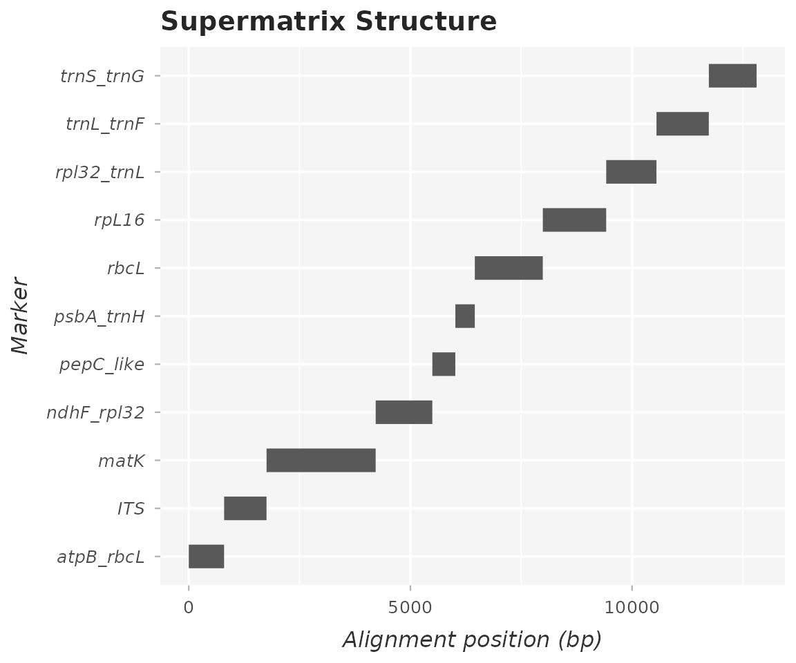
Figure 5: Marker Informativeness
Number of parsimony-informative sites against alignment length for each partition.
if ("parsimony_informative" %in% names(marker_stats)) {
p5 <- ggplot(marker_stats, aes(x = alignment_length, y = parsimony_informative, label = marker)) +
geom_point(size = 3.5, color = "grey35") +
geom_text(nudge_y = 20, size = 3.2, fontface = "italic", color = "grey20") +
theme_phylocactus(base_size = 12) +
labs(
title = "Marker Informativeness",
x = "Alignment length (bp)",
y = "Parsimony informative sites"
)
p5
}
Figure 6: Maximum-Likelihood Tree with Bootstrap Support (FBP)
Maximum-likelihood tree with FBP values on internal nodes and the major clades marked. Nodes fixed by the topological constraint are shown as constrained and carry no FBP value.
library(ggtree)
library(ape)
library(tidytree)
# Load support tree from Module 9
supp_tree_file <- system.file("extdata", "phylocactus_ml_tree.tree", package = "PhyloCactus")
if (file.exists(supp_tree_file) && nzchar(supp_tree_file)) {
ml_tree <- ape::read.tree(supp_tree_file)
ml_tree <- ape::ladderize(ml_tree)
# Canonical constraints table for clade annotations
constraints_csv_path <- system.file("extdata", "cactus_constraints.csv", package = "PhyloCactus")
if (file.exists(constraints_csv_path) && nzchar(constraints_csv_path)) {
constraints_tbl <- read_csv(constraints_csv_path, show_col_types = FALSE)
if (is.null(ml_tree$node.label)) {
ml_tree$node.label <- rep(NA_character_, ml_tree$Nnode)
}
MAIN_LEVEL4_VALUES <- c("Anacampseros", "Grahamia", "Talinopsis", "Talinum", "Talinella", "Leuenbergeria", "Pereskia", "Maihuenia", "Blossfeldia", "Opuntieae", "Cylindropuntieae", "Tephrocacteae", "Cacteae", "Core I", "Core II", "Copiapoa", "Calymmanthium", "Rhipsalis", "Portulaca", "Notocacteae", "BCT", "Rhipsalideae")
ML_MAIN_LAYER_SPECS <- tibble::tribble(
~reg_name, ~fontsize, ~barsize, ~offset, ~offset_text, ~fontface, ~sort_desc, ~angle, ~align,
"level_4_main", 2.5, 0.34, 0.010, 0.0038, "plain", TRUE, 0, TRUE,
"level_3", 3.5, 0.50, 0.170, 0.0055, "bold", TRUE, 270, TRUE,
"level_2", 4.0, 0.75, 0.220, 0.0100, "bold", TRUE, 270, TRUE,
"level_1", 4.5, 0.85, 0.270, 0.0100, "bold", TRUE, 270, TRUE
)
registry <- PhyloCactus::build_annotation_registry(
tree = ml_tree,
constraints_tbl = constraints_tbl,
main_level4_values = MAIN_LEVEL4_VALUES,
supp_level4_min_tips = 3L
)
max_raw <- max(suppressWarnings(as.numeric(ml_tree$node.label)), na.rm = TRUE)
is_proportion <- !is.na(max_raw) && max_raw <= 1.0
# Identify topologically constrained nodes (cactus_constraints.tree)
# to avoid presenting algorithmic constraints as empirical bootstrap support
constraint_tree_file <- system.file("extdata", "phylocactus_constraint_tree.tree", package = "PhyloCactus")
constrained_nodes_vec <- integer(0)
if (file.exists(constraint_tree_file) && nzchar(constraint_tree_file)) {
constrained_df <- tryCatch(
PhyloCactus::classify_constrained_nodes(ml_tree, constraint_tree_file),
error = function(e) NULL
)
if (!is.null(constrained_df)) {
constrained_nodes_vec <- constrained_df$node[constrained_df$constrained]
}
}
ml_tree_data <- tidytree::as_tibble(ml_tree) %>%
mutate(
raw_val = suppressWarnings(as.numeric(label)),
pct_val = if (is_proportion) raw_val * 100 else raw_val,
is_constrained = node %in% constrained_nodes_vec,
support_label = ifelse(is_constrained | is.na(pct_val), NA_character_, sprintf("%.0f", pct_val)),
support_class = case_when(
is_constrained ~ "Constrained",
pct_val >= 90 ~ ">= 90",
pct_val >= 70 ~ "70-89",
TRUE ~ "< 70"
),
support_class = factor(support_class, levels = c(">= 90", "70-89", "< 70", "Constrained"))
)
ml_tree_plot <- tidytree::as.treedata(ml_tree_data)
p6 <- ggtree(ml_tree_plot, linewidth = 0.3) +
theme_tree() +
geom_nodepoint(aes(fill = support_class), shape = 21, size = 2, stroke = 0.2, na.rm = TRUE) +
scale_fill_manual(
values = c(">= 90" = "white", "70-89" = "grey", "< 70" = "black", "Constrained" = "steelblue"),
name = "Support (FBP)",
na.translate = FALSE
) +
theme(legend.position = "bottom")
p6 <- PhyloCactus::apply_clade_label_layers(p6, registry, ML_MAIN_LAYER_SPECS)
xmax <- max(p6$data$x, na.rm = TRUE)
p6 <- p6 + coord_cartesian(xlim = c(0, xmax + xmax * 0.35), clip = "off") + theme(plot.margin = margin(12, 12, 12, 12))
p6
}
}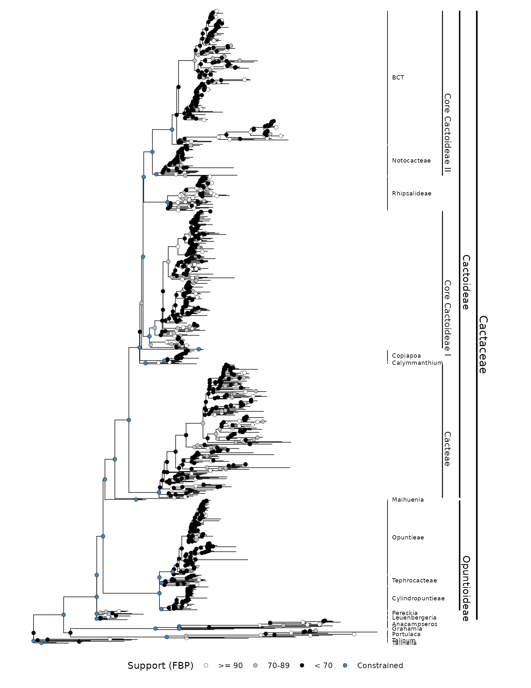
Figure 7: Full-Size Maximum-Likelihood Tree
All 1,024 tips with species names and FBP values, on a 36 × 48 in (91.4 × 121.9 cm) page.
if (file.exists(supp_tree_file) && nzchar(supp_tree_file)) {
ML_SUPP_LAYER_SPECS <- tibble::tribble(
~reg_name, ~fontsize, ~barsize, ~offset, ~offset_text, ~fontface, ~sort_desc, ~angle, ~align,
"level_4_supp", 6, 0.60, 0.030, 0.0038, "plain", TRUE, 0, TRUE,
"level_3", 8, 0.65, 0.150, 0.0038, "bold", TRUE, 270, TRUE,
"level_2", 9, 0.70, 0.200, 0.0100, "bold", TRUE, 270, TRUE,
"level_1", 10, 0.80, 0.250, 0.0100, "bold", TRUE, 270, TRUE
)
p7_supp <- ggtree(ml_tree_plot, linewidth = 0.2) +
theme_tree() +
geom_tiplab(size = 0.70, align = FALSE, linetype = "solid", linesize = 0.15, colour = "grey20") +
geom_nodelab(aes(label = support_label), size = 0.70, hjust = 0.7, colour = "black", na.rm = TRUE) +
theme(legend.position = "none")
p7_supp <- PhyloCactus::apply_clade_label_layers(p7_supp, registry, ML_SUPP_LAYER_SPECS)
xmax_supp <- max(p7_supp$data$x, na.rm = TRUE)
p7_supp <- p7_supp + coord_cartesian(xlim = c(0, xmax_supp + xmax_supp * 0.30), clip = "off") + theme(plot.margin = ggplot2::margin(12, 12, 12, 12))
ggplot2::ggsave("9_Visualization/figures/Figure_7_ML_Tree_Extended.pdf", plot = p7_supp, width = 36, height = 48, limitsize = FALSE)
}The annotated treedata object can be exported in NEXUS
format for FigTree or similar programs:
annotated_treedata <- PhyloCactus::augment_treedata_with_registry(ml_tree_plot, registry)
treeio::write.beast(annotated_treedata, file = "9_Visualization/figures/annotated_ml_tree.tree")Full-size tree files. Figure 7 is not rendered on this page because of its size. Running the chunk writes two files to the workspace: -
9_Visualization/figures/Figure_7_ML_Tree_Extended.pdf-9_Visualization/figures/annotated_ml_tree.treeThe same files are in the
extended_trees/directory of the repository: Figure_7_ML_Tree_Extended.pdf and annotated_ml_tree.tree.
Figure 8: Time-Calibrated Chronogram with HPD Intervals
Chronogram estimated with penalized likelihood in
treePL. Node bars are 95% HPD intervals summarized from the
100 bootstrap chronograms, and the axis shows geological periods.
# Load summary chronogram from Module 10
chrono_file <- system.file("extdata", "phylocactus_chronogram_hpd.tree", package = "PhyloCactus")
if (file.exists(chrono_file) && nzchar(chrono_file)) {
chrono_beast <- treeio::read.beast(chrono_file)
constraints_csv_path <- system.file("extdata", "cactus_constraints.csv", package = "PhyloCactus")
if (file.exists(constraints_csv_path) && nzchar(constraints_csv_path)) {
constraints_tbl <- read_csv(constraints_csv_path, show_col_types = FALSE)
tree_phy <- as.phylo(chrono_beast)
if (is.null(tree_phy$node.label)) {
tree_phy$node.label <- rep(NA_character_, tree_phy$Nnode)
}
MAIN_LEVEL4_VALUES <- c("Anacampseros", "Grahamia", "Talinopsis", "Talinum", "Talinella", "Leuenbergeria", "Pereskia", "Maihuenia", "Blossfeldia", "Opuntieae", "Cylindropuntieae", "Tephrocacteae", "Cacteae", "Core I", "Core II", "Copiapoa", "Calymmanthium", "Rhipsalis", "Portulaca", "Notocacteae", "BCT", "Rhipsalideae")
CHRONO_MAIN_LAYER_SPECS <- tibble::tribble(
~reg_name, ~fontsize, ~barsize, ~offset, ~offset_text, ~fontface, ~sort_desc, ~angle, ~align,
"level_4_main", 2.5, 0.34, 0.010, 0.0038, "plain", TRUE, 0, TRUE,
"level_3", 3.5, 0.50, 0.170, 0.0055, "bold", TRUE, 270, TRUE,
"level_2", 4.0, 0.75, 0.220, 0.0100, "bold", TRUE, 270, TRUE,
"level_1", 4.5, 0.85, 0.270, 0.0100, "bold", TRUE, 270, TRUE
)
registry_chrono <- PhyloCactus::build_annotation_registry(
tree = tree_phy,
constraints_tbl = constraints_tbl,
main_level4_values = MAIN_LEVEL4_VALUES,
supp_level4_min_tips = 3L
)
p8 <- ggtree(chrono_beast, linewidth = 0.3) +
theme_tree2() +
geom_range(range = 'height_0.95_HPD', color = 'gray60', alpha = 0.4, linewidth = 1.5) +
theme_tree()
p8 <- PhyloCactus::apply_clade_label_layers(p8, registry_chrono, CHRONO_MAIN_LAYER_SPECS)
p8 <- PhyloCactus::add_chronogram_axis(p8, tree_phy, by = 5, digits = 0L, segment_size = 3, title_margin_top = 30)
xmax <- max(p8$data$x, na.rm = TRUE)
p8 <- p8 + coord_cartesian(xlim = c(0, xmax + xmax * 0.35), clip = "off") + theme(plot.margin = margin(12, 12, 12, 12))
p8
}
}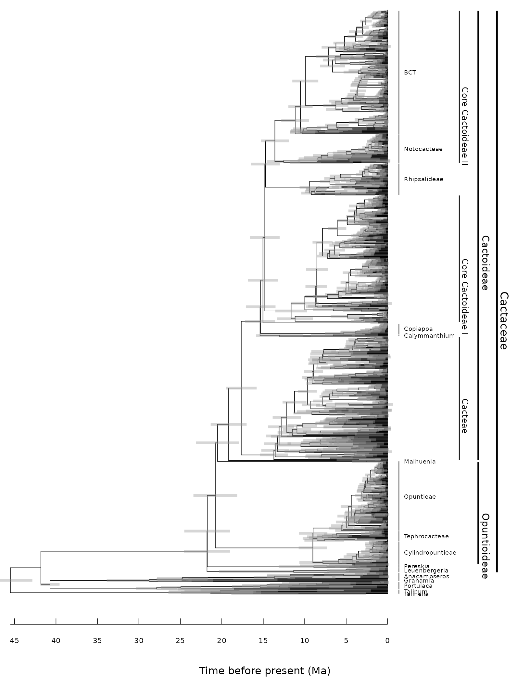
Figure 9: Full-Size Chronogram
All 1,024 tips with 95% HPD intervals and period boundaries, on a 36 × 48 in (91.4 × 121.9 cm) page.
if (file.exists(chrono_file) && nzchar(chrono_file)) {
CHRONO_SUPP_LAYER_SPECS <- tibble::tribble(
~reg_name, ~fontsize, ~barsize, ~offset, ~offset_text, ~fontface, ~sort_desc, ~angle, ~align,
"level_4_supp", 6, 0.60, 0.030, 0.0038, "plain", TRUE, 0, TRUE,
"level_3", 8, 0.65, 0.150, 0.0038, "bold", TRUE, 270, TRUE,
"level_2", 9, 0.70, 0.200, 0.0100, "bold", TRUE, 270, TRUE,
"level_1", 10, 0.80, 0.250, 0.0100, "bold", TRUE, 270, TRUE
)
p9_supp <- ggtree(chrono_beast, linewidth = 0.2) +
theme_tree2() +
geom_tiplab(size = 0.85, align = FALSE, linetype = "solid", linesize = 0.15, colour = "grey20") +
geom_range(range = 'height_0.95_HPD', color = 'gray60', alpha = 0.4, linewidth = 0.8) +
theme_tree()
p9_supp <- PhyloCactus::apply_clade_label_layers(p9_supp, registry_chrono, CHRONO_SUPP_LAYER_SPECS)
p9_supp <- PhyloCactus::add_chronogram_axis(p9_supp, tree_phy, by = 5, digits = 0L, segment_size = 10, title_margin_top = 28, bar_size = 30)
xmax_chrono_supp <- max(p9_supp$data$x, na.rm = TRUE)
p9_supp <- p9_supp + coord_cartesian(xlim = c(0, xmax_chrono_supp + xmax_chrono_supp * 0.30), clip = "off") + theme(plot.margin = ggplot2::margin(12, 12, 32, 12))
ggplot2::ggsave("9_Visualization/figures/Figure_9_Chronogram_Extended.pdf", plot = p9_supp, width = 36, height = 48, limitsize = FALSE)
}The annotated treedata object can be exported in NEXUS
format for FigTree or similar programs:
annotated_chrono <- PhyloCactus::augment_treedata_with_registry(chrono_beast, registry_chrono)
treeio::write.beast(annotated_chrono, file = "9_Visualization/figures/annotated_chronogram.tree")Full-size chronogram files. Figure 9 is not rendered on this page because of its size. Running the chunk writes two files to the workspace: -
9_Visualization/figures/Figure_9_Chronogram_Extended.pdf-9_Visualization/figures/annotated_chronogram.treeThe same files are in the
extended_trees/directory of the repository: Figure_9_Chronogram_Extended.pdf and annotated_chronogram.tree.
Figure 10: Species Composition
Status of the 2,003 species in the registry: sampled and dated in the
tree (986), sequenced but removed by RAxML-NG as identical
duplicates (36), accepted species without sequences (943), and outgroups
(38).
p10 <- ggplot(species_summary_iucn %>% count(status_pipeline), aes(x = reorder(status_pipeline, n), y = n)) +
geom_col(fill = "grey35", width = 0.7) +
coord_flip() +
geom_text(aes(label = scales::comma(n)), hjust = -0.15, size = 3.8, color = "grey20") +
scale_y_continuous(expand = expansion(mult = c(0, 0.15))) +
theme_phylocactus(base_size = 12) +
labs(
title = "Species Composition",
subtitle = "Methodological status across checklist, supermatrix, and tree",
x = NULL,
y = "Number of species"
)
p10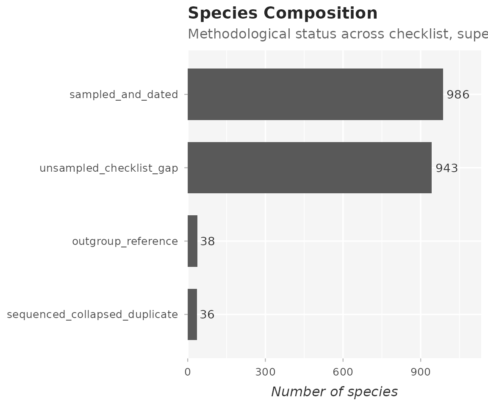
Figure 11: IUCN Categories
Number of ingroup species in the tree in each IUCN Red List category.
if (any(species_summary_iucn$iucn_found, na.rm = TRUE)) {
TABLE_iucn_categories <- species_summary_iucn %>%
filter(iucn_found == TRUE, in_ml_tree == TRUE, is_ingroup == TRUE) %>%
count(iucn_category, iucn_category_name, sort = TRUE)
p11 <- ggplot(TABLE_iucn_categories, aes(x = reorder(iucn_category, n), y = n, fill = iucn_category)) +
PhyloCactus::scale_fill_iucn(name = "IUCN Category") +
geom_col(width = 0.7) +
theme_phylocactus(base_size = 12) +
labs(
title = "IUCN Categories",
x = "Category",
y = "Number of species"
)
p11
}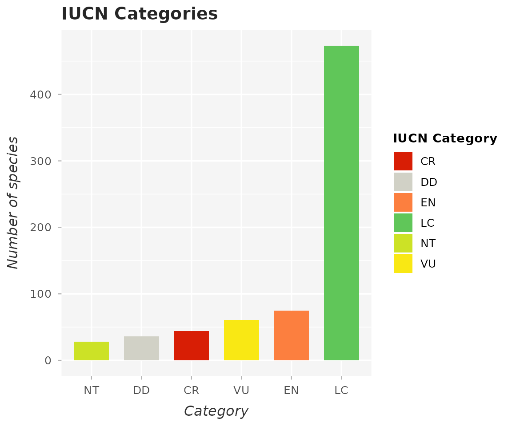
Figure 12: Molecular Completeness vs. IUCN Category
Number of loci per species in each IUCN category, for the ingroup species in the chronogram. The figure shows whether threatened species are represented by fewer loci.
if (any(species_summary_iucn$iucn_found, na.rm = TRUE)) {
p12 <- ggplot(
species_summary_iucn %>%
filter(status_pipeline == "sampled_and_dated",
iucn_found == TRUE,
!is.na(iucn_category)),
aes(x = iucn_category, y = pct_markers, fill = iucn_category)
) +
geom_violin(trim = FALSE, alpha = 0.5) +
geom_boxplot(width = 0.2, outlier.size = 0.6, alpha = 0.8) +
PhyloCactus::scale_fill_iucn(name = "IUCN Category") +
theme_phylocactus(base_size = 12) +
labs(
title = "Molecular Completeness vs IUCN Category",
subtitle = "Marker occupancy across IUCN threat categories for sampled ingroup taxa (N = 986)",
x = "IUCN Category",
y = "Marker completeness (%)"
)
p12
}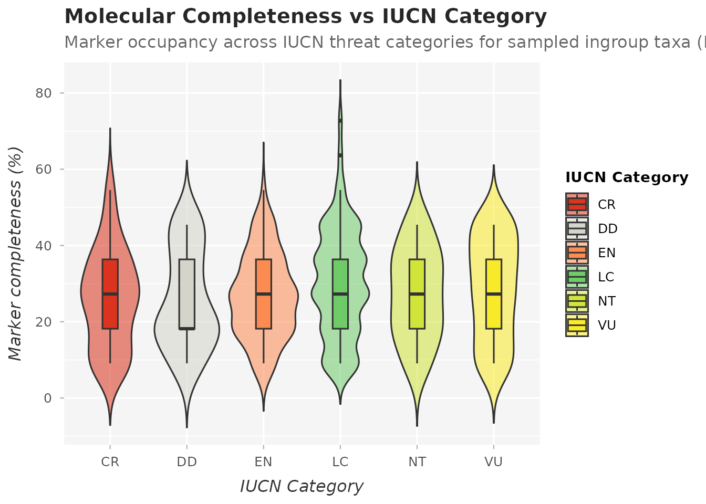
Figure 13: Threatened Species Without Sequence Data by Genus
Threatened species (CR, EN, VU) among the 943 accepted species
without sequence data, by genus. Parodia (24 species),
Mammillaria (22) and Melocactus (14) have the most.
The species are listed in
TABLE_conservation_prioritization_gaps.csv, which can guide
field collecting and sequencing.
plot_gaps_genus <- TABLE_conservation_prioritization_gaps %>%
count(genus, iucn_category) %>%
mutate(iucn_category = factor(iucn_category, levels = c("CR", "EN", "VU")))
top_gap_genera <- TABLE_conservation_prioritization_gaps %>%
count(genus, sort = TRUE) %>%
slice_max(n, n = 12) %>%
pull(genus)
p13 <- ggplot(plot_gaps_genus %>% filter(genus %in% top_gap_genera),
aes(x = factor(genus, levels = rev(top_gap_genera)), y = n, fill = iucn_category)) +
geom_col(width = 0.7) +
coord_flip() +
PhyloCactus::scale_fill_iucn(name = "Threat Category") +
theme_phylocactus(base_size = 12) +
theme(axis.text.y = element_text(face = "italic")) +
labs(
title = "Threatened Unsampled Species by Genus",
subtitle = "Priority Cactaceae taxa (CR, EN, VU) lacking molecular sequences",
x = "Genus",
y = "Number of threatened unsequenced species"
)
p13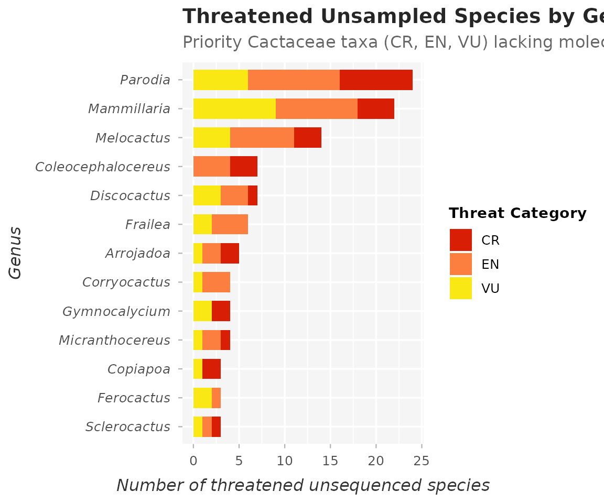
Figure 14: Endemic Species by Country
Countries ranked by the number of endemic ingroup species in the tree, based on IUCN records of endemism.
if (any(species_summary_iucn$iucn_is_endemic, na.rm = TRUE)) {
plot_data_endemism <- species_summary_iucn %>%
filter(iucn_is_endemic == TRUE, in_ml_tree == TRUE, is_ingroup == TRUE) %>%
separate_rows(iucn_endemic_locations, sep = "; ") %>%
count(iucn_endemic_locations, sort = TRUE) %>%
slice_max(n, n = 20)
p14 <- ggplot(plot_data_endemism, aes(x = reorder(iucn_endemic_locations, n), y = n)) +
geom_col(fill = "grey35", width = 0.7) +
coord_flip() +
theme_phylocactus(base_size = 12) +
labs(
title = "Endemic Species by Country",
x = "Country",
y = "Number of endemic species"
)
p14
}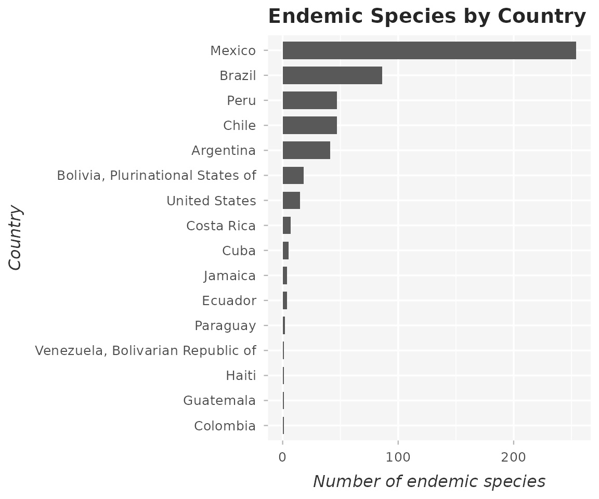
Figure 15: Endemic Species by Country and IUCN Category
IUCN categories of the endemic ingroup species in the tree, for the countries with the most endemics.
if (any(species_summary_iucn$iucn_found, na.rm = TRUE)) {
plot_iucn_country <- species_summary_iucn %>%
filter(iucn_is_endemic == TRUE, in_ml_tree == TRUE, is_ingroup == TRUE, !is.na(iucn_endemic_locations)) %>%
separate_rows(iucn_endemic_locations, sep = "; ") %>%
count(iucn_endemic_locations, iucn_category)
top_countries <- plot_data_endemism$iucn_endemic_locations
plot_iucn_country <- plot_iucn_country %>% filter(iucn_endemic_locations %in% top_countries)
if (nrow(plot_iucn_country) > 0) {
p15 <- ggplot(plot_iucn_country, aes(x = factor(iucn_endemic_locations, levels = rev(top_countries)), y = n, fill = iucn_category)) +
geom_col(width = 0.7) +
coord_flip() +
PhyloCactus::scale_fill_iucn(name = "IUCN Category") +
theme_phylocactus(base_size = 12) +
labs(
title = "Endemic Species by Country and IUCN Category",
x = "Country",
y = "Number of endemic species"
)
p15
}
}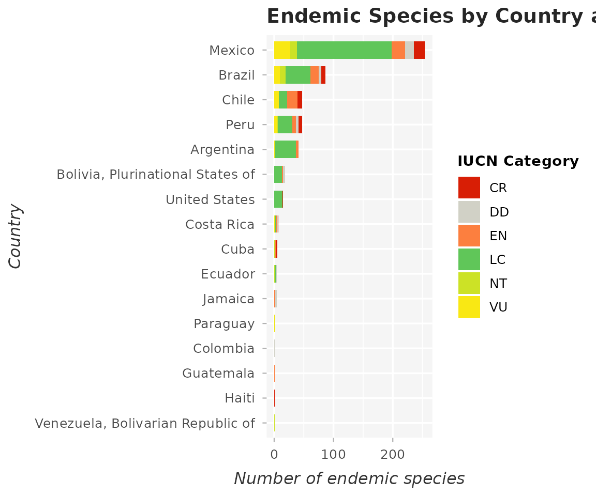
Figure 16: Primary Ecological Threats
Threat classes recorded by the IUCN Red List for the ingroup species in the tree, ranked by frequency.
if (any(!is.na(species_summary_iucn$iucn_threat_names))) {
plot_threats <- species_summary_iucn %>%
filter(!is.na(iucn_threat_names), in_ml_tree == TRUE, is_ingroup == TRUE) %>%
separate_rows(iucn_threat_names, sep = "; ") %>%
count(iucn_threat_names, sort = TRUE) %>%
slice_max(n, n = 15)
if (nrow(plot_threats) > 0) {
p16 <- ggplot(plot_threats, aes(x = reorder(iucn_threat_names, n), y = n)) +
geom_col(fill = "grey35", width = 0.7) +
coord_flip() +
theme_phylocactus(base_size = 12) +
labs(
title = "Most Common Threats",
x = "Threat",
y = "Number of species"
)
p16
}
}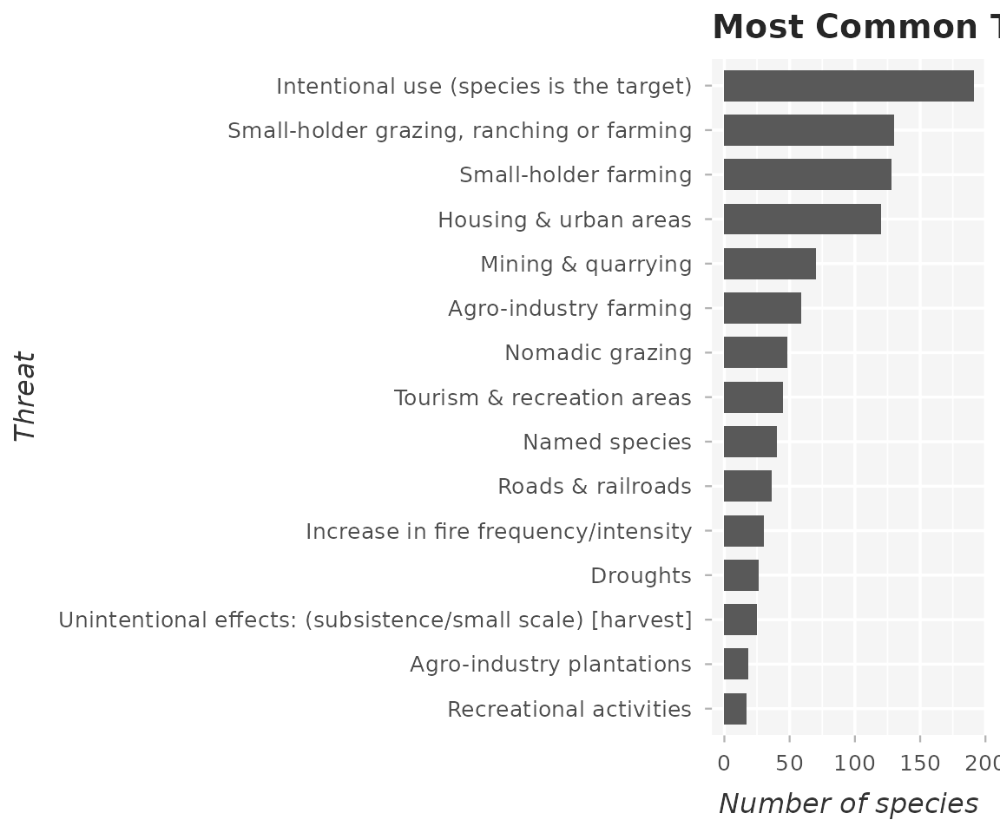
Figure 17: Primary Ecological Habitats
Habitat classes recorded by the IUCN Red List for the ingroup species in the tree.
if (any(!is.na(species_summary_iucn$iucn_habitat_names))) {
plot_habitats <- species_summary_iucn %>%
filter(!is.na(iucn_habitat_names), in_ml_tree == TRUE, is_ingroup == TRUE) %>%
separate_rows(iucn_habitat_names, sep = "; ") %>%
count(iucn_habitat_names, sort = TRUE) %>%
slice_max(n, n = 15)
if (nrow(plot_habitats) > 0) {
p17 <- ggplot(plot_habitats, aes(x = reorder(iucn_habitat_names, n), y = n)) +
geom_col(fill = "grey35", width = 0.7) +
coord_flip() +
theme_phylocactus(base_size = 12) +
labs(
title = "Most Common Habitats",
x = "Habitat",
y = "Number of species"
)
p17
}
}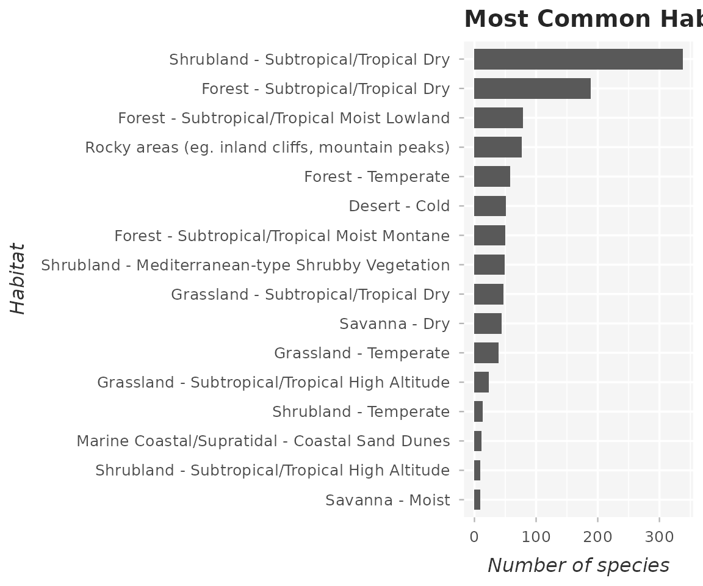
Conclusion
This tutorial produced the species registry, the conservation tables, and the figures of the dataset, the tree and the chronogram.
Tutorial 4 compares the tree with published phylogenies of Cactaceae using Robinson-Foulds distances and multidimensional scaling of tree space.
Continue to Tutorial 4: Phylogenetic Validation and Comparative Analyses
References
- Isaac et al. 2007. Mammals on the EDGE: conservation priorities based on threat and phylogeny. PLoS ONE, 2(3), e296. https://doi.org/10.1371/journal.pone.0000296
- Korotkova et al. 2021. Cactaceae at Caryophyllales.org - A dynamic online species-level taxonomic backbone for the family. Willdenowia, 51(2), 251–270. https://doi.org/10.3372/wi.51.51208